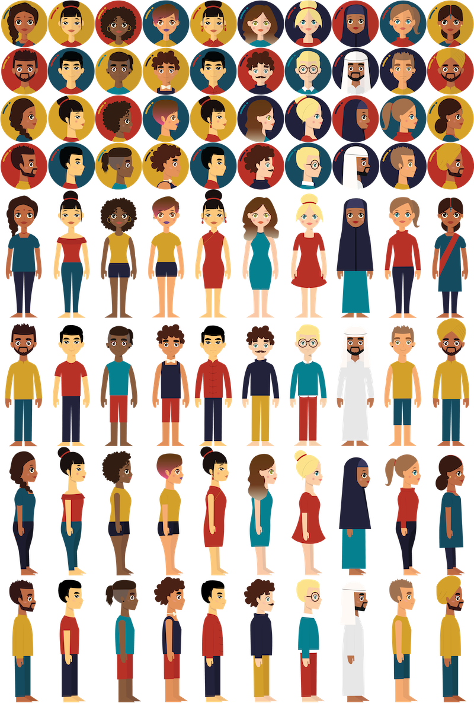

"Ready to BE Dragged" version
"Mix & Match" version
Illustrating Skills: I have never illustrate human figures before and it was a challenge to draw front and side views.
Solution: I learned from illustrators who are expert in drawing human figures
Illustrating in different views: The project requires me to draw front and side view of each human figure. I had trouble with it at first considering it was my first time illustrating a human figure.
Solution: Recalling IAT 106, I learned to draw front, side and isometric view of objects therefore, I apply what was taught to this project using guiding lines and illustrating the front view first.
This project has improved my research skill and interaction design skill. I believe, the work my teammate and I have created for this app is valuable because throughout the 3 weeks span of this project, we are able to deeply learn about the app. It was a great chance for us to tackle an uncommon app in our society.